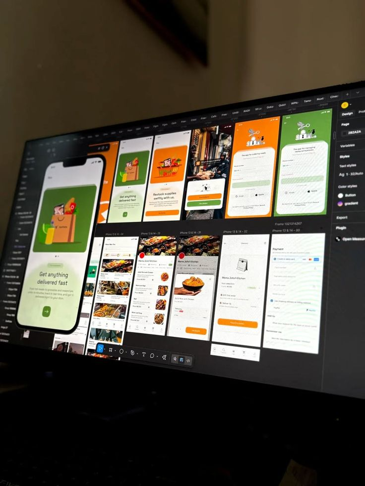

DESIGN • CREATE • EXPERIENCE
Ciptakan tampilan digital yang menarik dan pengalaman pengguna yang nyaman. Pelajari bagaimana sebuah aplikasi atau website dirancang dari ide hingga menjadi desain.
Jelajahi Materi
INTRODUCTION TO DIGITAL DESIGN
UI/UX Design merupakan bidang yang berhubungan dengan perancangan tampilan dan pengalaman pengguna ketika menggunakan sebuah produk digital, seperti website, aplikasi, maupun sistem informasi.
Dalam proses pembuatannya, seorang desainer tidak hanya memperhatikan keindahan tampilan, tetapi juga memastikan bahwa produk mudah dipahami, nyaman digunakan, dan sesuai dengan kebutuhan pengguna.
UI merupakan bagian visual dari sebuah produk digital yang berinteraksi langsung dengan pengguna.
Contohnya adalah warna, ikon, tombol, tipografi, gambar, dan tata letak halaman.
UX merupakan pengalaman yang dirasakan pengguna ketika menggunakan sebuah produk digital.
Fokusnya meliputi kemudahan penggunaan, alur navigasi, kenyamanan, dan kebutuhan pengguna.
Pembelajaran UI/UX dimulai dengan memahami kebutuhan pengguna hingga menghasilkan rancangan desain digital.
Mengenal konsep UI dan UX, perbedaannya, serta peran keduanya dalam pengembangan aplikasi dan website.
Mempelajari cara memahami kebutuhan, kebiasaan, dan permasalahan pengguna sebelum membuat desain.
Membuat kerangka awal sebuah halaman untuk menentukan susunan konten, tombol, gambar, dan navigasi.
Mempelajari pemilihan warna, tipografi, ikon, ilustrasi, jarak, dan tata letak agar desain terlihat konsisten.
Membuat rancangan interaktif yang menggambarkan bagaimana pengguna berpindah dari satu halaman ke halaman lain.
Menguji rancangan untuk mengetahui apakah desain mudah dipahami dan digunakan oleh pengguna.
Mengetahui peran desain antarmuka dan pengalaman pengguna.
Melatih kemampuan dalam menyusun tampilan digital yang menarik.
Mampu menyusun kerangka halaman sebelum masuk ke tahap desain.
Mampu membuat rancangan antarmuka yang dapat dicoba dan dievaluasi.
Beberapa perangkat lunak yang dapat digunakan untuk membantu proses perancangan UI/UX:
Prinsip UI/UX dapat ditemukan dalam berbagai produk digital yang kita gunakan sehari-hari.
Untuk menerapkan materi yang telah dipelajari, siswa dapat membuat beberapa proyek berikut:
Mulai kenali kebutuhan pengguna, kembangkan kreativitas, dan ciptakan desain digital yang bermanfaat.
Kembali ke Katalog RPL